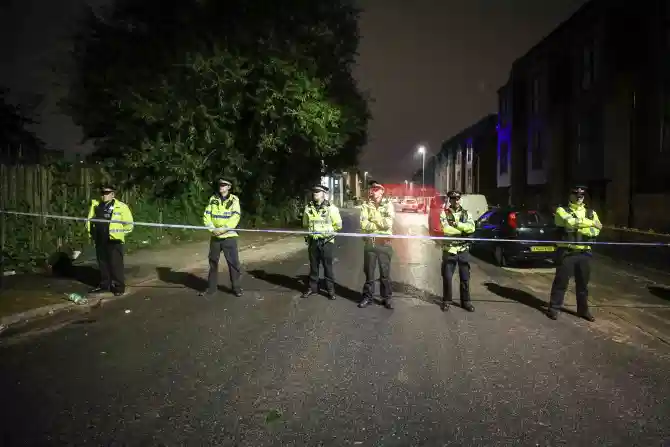

DNBC NEWS
DNBC NEWS
DNBC NEWS
LOCKDOWN KILLING Moss Side shooting – Double murder probe as second man dies of gunshot wounds after lockdown party in Manchester
Dan Keane 21 Jun 2020, 16:20 Updated: 22 Jun 2020, 11:25
A DOUBLE murder probe has been launched after two men died in a shooting at a 'lockdown street party' in Manchester.
The two victims, aged 36 and 21, were both shot dead following an apparent street gathering with "hundreds of people" in the Moss Side area last night.
Greater Manchester Police said the two men "self-presented" at hospital with gunshot wounds shortly before 1am on Sunday.
The shooting is believed to have taken place at a street party being held in a car park in the area, Manchester Evening News reports.
Images show the area strewn with broken bottles and rubbish following the event.
Residents said the shooting followed a lockdown party with a DJ in Moss Side, Manchester.
A local resident, 24, said police first attended at 7pm on Saturday but did nothing.
She added: “Hundreds more arrived and it got really noisy.
“Lots of neighbours rang police but we were just told to keep our windows shut. Police visited a few times and told everyone to keep it peaceful.
“We could tell it wasn’t going to end well.”
Another resident said: “There must have been 200 there. The car park was packed. Police had so many opportunities to stop it escalating.”
Meanwhile, Labour's boss Sir Keir Starmer said he wants to "speak to the PM to discuss how together we can improve the response and learn from this, whether there need to be changes to the law."
And he added: "The investigation must be completed, but this is not a time for party politics."It is incumbent on all of us to pull together in response to this."
'UNPLANNED INCIDENT'
Detective Inspector Andrew Butterworth, from the force's Major Incident Team, confirmed today that the shooting took place at an "unplanned incident", which had followed a planned community event in the area.
He said: "We are aware that, a number of hours before this incident, there was a community event in Moss Side.
"This event was attended by Greater Manchester Police along with local people and partner agencies – it was not an illegal rave and it had concluded prior to this incident.
"It does appear that the incident took place at what we believe was an unplanned event near to the location of the earlier community event.
"We know that there were a number of people in the area at the time and, if they haven’t already, I appeal directly to them or anyone else with information, photographs of videos which may aid our investigation to contact police straight away."
'HUNDREDS OF PEOPLE'
They said: "There must have been 200 people there. The car park was jam-packed.
"The music was so so loud. There was a DJ and everything. He kept shouting 'Welcome to Manchester. Welcome to Moss Side".
Another neighbour, who did not wish to be named, said: "It's a really normal neighbourhood with an occasional spike in violence.
"I had a walk out to see what was happening and I would say there were hundreds of people around but I did see police patrols. Later, we heard an helicopter overhead."
Police officers remain at the scene and an investigation is ongoing.
A statement from the force read: "Police are aware of an incident where shortly before 1am today (Sunday 21 June 2020) two men self-presented at hospital with gunshot wounds.
"Despite the best efforts of medical workers, a 36-year old man has sadly died from his injuries and a 21-year old man remains in a life threatening condition.
They added: "Police are currently responding to this incident and I would like to reassure the community that there is an increased police presence in the Moss Side area where this incident is believed to have taken place."
"We will provide an update as soon as we have further information."
Anyone with information should contact police on 0161 856 6777 quoting 221 of 21/06/20 or the independent charity – Crimestoppers, anonymously, on 0800 555 111.



{kind=link}